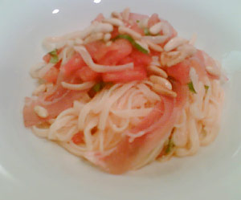

Pasta mit rohen Tomaten und Rohschinken
4,5 von 68 Tomaten einschneiden und kurz blanchieren, schälen und entkernen. Eine Knoblauchzehe, viel Basilikum, Olivenöl, Salz und Pfeffer vermengen. Papardelle al dente kochen und vermischen. Mit gerösteten Pinienkernen und Rohschinken-Streifen garnieren.
